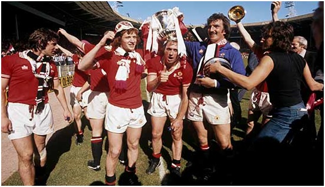
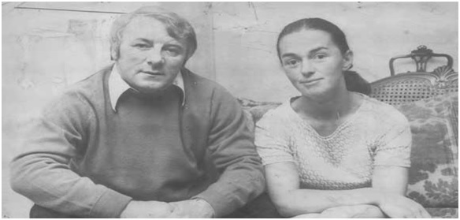

Chương 19

hập niên 1970, Manchester United liên tục vung tiền “làm đẹp” sân Old Trafford. Khán đài Bắc đã được tân trang trước World Cup 1966, nay các khán đài còn lại cũng lần lượt được tu sửa, cơi nới. BLĐ còn cho xây thêm hai nhà hàng, và hệ thống các phòng hội nghị. Tổng phí tổn cho các công trình lên tới trên một triệu bảng.
Old Trafford ngày một diễm kiều, nhưng thành tích United đạt được không hề tương xứng. Mùa 1973-1974, như đã tường thuật, CLB lần đầu tiên sau nhiều thập kỷ rơi xuống Hạng Nhì. Một số fan hâm mộ Quỷ Đỏ thất vọng, liên tục gây trò quậy phá. Các đội Hạng Nhì sợ nhất United, bởi đội đi đến đâu, hooligan theo đến đấy, hết tràn xuống sân gây gián đoạn trận đấu thì cà khịa đánh nhau với CĐV chủ nhà, có bận còn nổi lửa đốt cả khán đài. Uy tín Man đỏ do vậy bị sứt mẻ nghiêm trọng.
Về nội tình đội bóng,tân HLV trưởng Tommy Docherty vốngiỏi ăn nói, tính tình vui vẻ, hay đùa tếu, nên tạo được bầu không khí rất tích cực, vui tươi khi mới đến đội. Tuy nhiên, cầu thủ dần dần nhận ra bản tínhông thầy. Không chỉ đùa tếu, Docherty đùa rất ác và cay nghiệt. Như trong trận gặp Liverpool vào tháng 11, 1973, khi thủ thành Paddy Roche, hôm đó bắt thếAlex Stepney, mắc sai lầm trong pha lao ra truy cản đường tạt bóng của đối phương, khiến United bị thua một bàn không đáng có, Docherty không an ủi học trò mà cười mỉa: “Roche giống y như Dracula, thấy thánh giá[1] là sợ”. Từ đấy, đi đâu gặp ai, Docherty cũng lặp lại câu trên, làm Roche mất hẳn sự tự tin, không bao giờ ngóc đầu lên được nữa.
Phía sau bề mặt xởi lởi, ít ai biết Docherty thực sự nghĩ gì. Lời nói và việc làm của ông nhiều khi trái ngược như đêm và ngày. Hôm nay, Docherty ra vẻ o bế một cầu thủ hết mực, hôm sau đã có thể tìm mọi cách tống khứ anh ta đi một cách không thương tiếc. Vì thế, ngay cả những cầu thủ do Docherty đưa về cũng dần đánh mất cảm tình với ông.
Nói như thế không có ý phủ nhận năng lực Docherty. Mùa 1974-1975, HLV này thực hiện một số điều chỉnh hợp lý, hãm được đà tụt dốc không phanh của United. Ông mua về hai cầu thủ quan trọng: Steve Coppell và Stuart Pearson. Coppell là hữu biên bán chuyên, vừa chơi bóng cho Transmere Rovers vừa theo học văn bằng cử nhân kinh tế. Anh lọt vào mắt xanh Bill Shankly,cựu HLV Liverpool, trong một lần ông đến xem Transmere thi đấu. Shankly tới gặp Bob Paisley, người kế nhiệm mình tại Anfield, để tiến cử Coppell. Paisley đón tiếp sếp cũ khá hờ hững, tỏ ra không mấy quan tâm, khiến Shankly điên tiết, giới thiệu Coppell cho Tommy Docherty. Tin lời bậc trưởng thượng, Docherty không cần xem giò xem cẳng gì, ký ngay hợp đồng với Coppell. Từ đó, không biết lấy đâu năng lượng, Coppell làm một lúc ba việc: Học đại học, đảm nhiệm chức HLV kiêm cầu thủ đội bóng nhà trường, và chơi rất thành công cho Quỷ Đỏ.
Stuart Pearson thì đến United từ Hull City. Docherty xếp anh đá trung phong, đẩy Lou Macari xuống tuyến hai. Macari chơi tiền đạo vô cùng “chân gỗ”, song ở vị trí tiền vệ lại tỏa sáng, phá lưới liên tục. Cuối mùa 1974-1975, Pearson và Macari cùng dẫn đầu danh sách ghi bàn tại CLB, với 18 lần lập công trên tất cả các mặt trận. United dễ dàng vô địch giải Hạng Nhì để trở về mái nhà xưa. Đội hình lên hạng năm đó độ tuổi trung bình chỉ 22, gồm nhiều gương mặt mới được đôn lên từ tuyến trẻ, như Jimmy Nicholl (19 tuổi), Arthur Albiston (18), David McCreery (18)…
Lứa cầu thủ trẻ của Docherty bắt đầu được ví với “đồng ấu Busby”, khi họ thi đấu vô cùng tự tin trong mùa đầu trở lại Hạng Nhất. Giữa thời kỳ chủ nghĩa phòng ngự đang thịnh hành ở hầu khắp các đội bóng Anh, United như làn gió mát, với lối chơi tấn công thanh thoát. Bước vào tháng tư, đội thẳng tiến trên đường chinh phục cú đúp. Tại giải Hạng Nhất, United so kè quyết liệt với Liverpool và Queens Park Rangers (QPR) trong cuộc đua tam mã. Trong khuôn khổ Cúp FA, họ ngược dòng đánh bại Wolverhampton 3-2 ở vòng sáu, rồi hạ Derby bằng hai bàn của Gordon Hill, giành quyền vào chung kết.
Rủi thay, đến giai đoạn chót đầy gay cấn, Coppell và Pearson cùng lúc chấn thương, đẩy United vào thế khó. Ba vòng cuối giải VĐQG, CLB thua đến hai trận, đành chấp nhận vị trí hạng ba. Tiếc hơn nữa, dù đối thủ trong trận chung kết Cúp FA chỉ là đội bóng Hạng Nhì Southampton, United lại quá chủ quan, dẫn đến thất bại đắng cay 0-1. Tuy thế, khách quan nhìn nhận, vừa lên hạng đã đạt thành tích như trên là quá thành công, nên sau trận thua, hàng ngàn fan hâm mộ vẫn đổ ra đường chào đón đội bóng trở về. “Năm sau, chúng tôi sẽ tái xuất và vô địch”, Docherty hứa.
Mùa 1976-1977, được bổ sung thêm Jimmy Greenhoff từ Stoke, hàng công United càng trở nên lợi hại. Greenhoff chơi rất ăn ý cùng Stuart Pearson và Gordon Hill. Cả ba đều thông minh, lanh lẹ, vừa giỏi ghi bàn, vừa giỏi hỗ trợ cho nhau. Đứng thứ sáu trên bảng tổng sắp, song United ghi bàn nhiều hơn các đội trên Top 3. Có điều, do thủ quân Martin Buchan, hàng đá tảng nơi hàng phòng ngự, gặp vấn đề về chấn thương, đội để lọt lưới quá nhiều, không thể cạnh tranh ngôi vô địch[2]. Riêng ở Cúp FA, Docherty giữ được lời hứa. Ông dẫn dắt United đá văng Southampton ở vòng 5, phục thù thành công thất bại năm ngoái. Đội thắng tiếp Aston Villa, trước khi bắt Leeds khuất phục trong trận “derby hoa hồng” căng như dây đàn. Chờ họ trong trận cuối cùng là Liverpool.
Năm trước, gặp Southampton, ai cũng tưởng United dễ dàng đoạt cúp thì họ thua mất mặt. Năm nay, đụng Liverpool, chẳng ai nghĩ United thắng, họ lại làm được điều thần kỳ. Đang bị chấn thương, nhưng không muốn bỏ lỡ trận cầu quan trọng nhất mùa bóng, Martin Buchan cắn răng ra sân, đá cặp cùng chàng trẻ Arthur Albiston. Cả hai thi đấu xuất thần, bắt chết siêu sao Kevin Keegan. Ở thế cửa dưới, thi đấu với tinh thần thoải mái, không có gì để mất, Quỷ Đỏ liên tục gây khó khăn cho kình địch. Bốn phút đầu hiệp hai là cao trào trận đấu: Phút 51, Pearson mở tỷ số; phút 53, Case gỡ hòa; phút 55, Macari sút căng, bóng đập ngực Jimmy Greenhoff đổi hướng bay vào lưới, ấn định chiến thắng 2-1.
Liverpool năm 1977 đang phơi phới trên đỉnh cao. Với những cầu thủ sáng giá như Kevin Keegan, John Toshack, Ray Clemence…, họ giành chức VĐQG và đánh bại Borussia Moenchengladbach của Đức để đoạt Cúp C1. Vậy mà United làm “kỳ đà” thành công, khiến đại kình vuột cú ăn ba, đến nay vẫn còn mang hận. Về phía Quỷ Đỏ, Cúp FA là danh hiệu lớn đầu tiên của đội kể từ 1968. Lãnh cúp xong, HLV Tommy Docherty lấy ngay cái nắp đội lên đầu, nhảy múa khoái trá như trẻ con.

Manchester United giành Cúp FA năm 1977 (Ảnh:Footballchatter.com)
United đang trên đà tiến, bỗng một scandal nổ ra, làm rung chuyển thượng tầng đội bóng. Chỉ một tháng sau danh hiệu FA, Docherty tổ chức buổi họp báo, chẳng phải để giới thiệu cầu thủ mới, mà để tuyên bố mình sẽ… bỏ vợ, tiến tới hôn nhân với người tình Mary Brown. Hai người lén lút quan hệ đã ba năm, nay muốn bước ra khỏi bóng tối, cùng “nắm tay nhau đi giữa nhân gian”! Nếu chỉ có thế cũng chẳng gì to tát. Đàn ông bỏ vợ này lấy vợ kia là chuyện thường ngày ở huyện. Vấn đề nằm ở chỗ Mary Brown chính là vợ của Laurie Brown, bác sỹ[3] tại Old Trafford. Chuyện đến nước này, tất một người phải rời United, hoặc Docherty hoặc Brown.
Chẳng cần nói, ai cũng biết với một CLB bóng đá, HLV trưởng quan trọng hơn bác sỹ, nên theo lẽ thường, người cuốn gói phải là Brown. Chính Docherty đã hỏi ý chủ tịch Louis Edwards, được Edwards ủng hộ, sau đó mới dám mở họp báo công khai mọi chuyện. BLĐ United đang tính chuyện chấm dứt hợp đồng với Brown, chẳng dè Brown quá cao tay ấn, thầm thì vào tai các vị giám đốc: Được, cứ đuổi tôi đi. Nhưng ở đội bóng này chẳng phải chỉ có một vụ ngoại tình đâu. Tôi đang nắm trong tay bằng chứng về việc “ngủ lang” của mấy sếp lớn đây. Có cần tôi xì thông tin ra cho báo giới không? Có tật giật mình, BLĐ quay ngược 180 độ, tăng lương cho Brown và sa thải Docherty!
Nhận tin mất việc, Docherty bàng hoàng: Mình vừa giúp đội giành cúp, có lẽ nào lại thế? Ông cảm thấy mình là nạn nhân trong một thế giới đạo đức giả. Matt Busby nghe đồn cũng giấu vợ nuôi bồ nhí, nhưng nhờ lén lút che mắt thiên hạ nên không sao, còn ông dám sống với tình yêu thì bị “xử trảm”! “Tôi bị trừng phạt vì yêu, chẳng phải vì thành tích kém”, Docherty chua chát, “HLV bóng đá là một gã cô độc, chơi với nhiều người nhưng bạn chẳng có ai”.
Thật vậy, Docherty ngỡ Louis Edwards là bạn, chẳng ngờ trong lúc nguy nan, ngài chủ tịch lại khoanh tay đứng nhìn. Tuy từ 1975, thành tích huấn luyện của Docherty rất khá, song học trò không mấy ưa ông; ông đi cũng không mấy người buồn. Những người từng bị Docherty đẩy khỏi Old Trafford thì hồ hởi ra mặt. “Tommy Docherty là HLV dở nhất trên đời”, Willie Morgan nhận định, “Ông ta có đi, United mới khá”.
Nghe được nhận xét từ Morgan, Docherty nổi giận, kiện anh ra tòa vì tội phỉ báng. Morgan nhân luôn cơ hội này chơi thầy cũ một vố. Anh cùng luật sư nghiên cứu, trình ra tòa hàng tập hồ sơ dày cộm, tố cáo rõ ràng từng sai phạm trong quá khứ của Docherty. Thôi thì đủ thứ chuyện: Tuồn vé xem chung kết Cúp FA ra ngoài cho cò chợ đen, đòi đội bạn hối lộ mình 1000 bảng mới chịu cho George Best xuất hiện đá giao hữu, đấm vào mặt người hâm mộ, nói dối Denis Law để tống khứ anh khỏi United… Song song đó, Pat Crerand, Alex Stepney, và rất nhiều người khác sẵn sàng ra làm chứng, để chứng minh câu “Tommy Docherty là HLV dở nhất” của Morgan là có cơ sở, không phải phỉ báng. Docherty lúc này mới sợ, vội rút đơn kiện, nhưng không còn kịp nữa. Tòa xử Morgan biến ra xử Docherty. May mà cuối cùng Docherty không bị làm sao.
Rời United, Docherty trượt dài, đi làm HLV ở đâu cũng thất bại, chỉ thành công trong chuyện tình cảm. Ông và Mary Brown cưới nhau, sống hạnh phúc cho đến ngày nay.

Tommy Docherty và Mary Brown (Ảnh: Thesundaytimes.co.uk)
Chú thích:
[1] Docherty chơi chữ. “Thánh giá” hay “tạt bóng” tiếng Anh đều là “cross”.
[2] Trong 8 trận vắng Buchan, United thua 5, hòa 3!
[3] Đúng ra chỉ là chuyên gia vật lý trị liệu (physio), nhưng ở Việt Nam quen gọi bác sỹ, nên chúng tôi cũng dịch theo như thế.